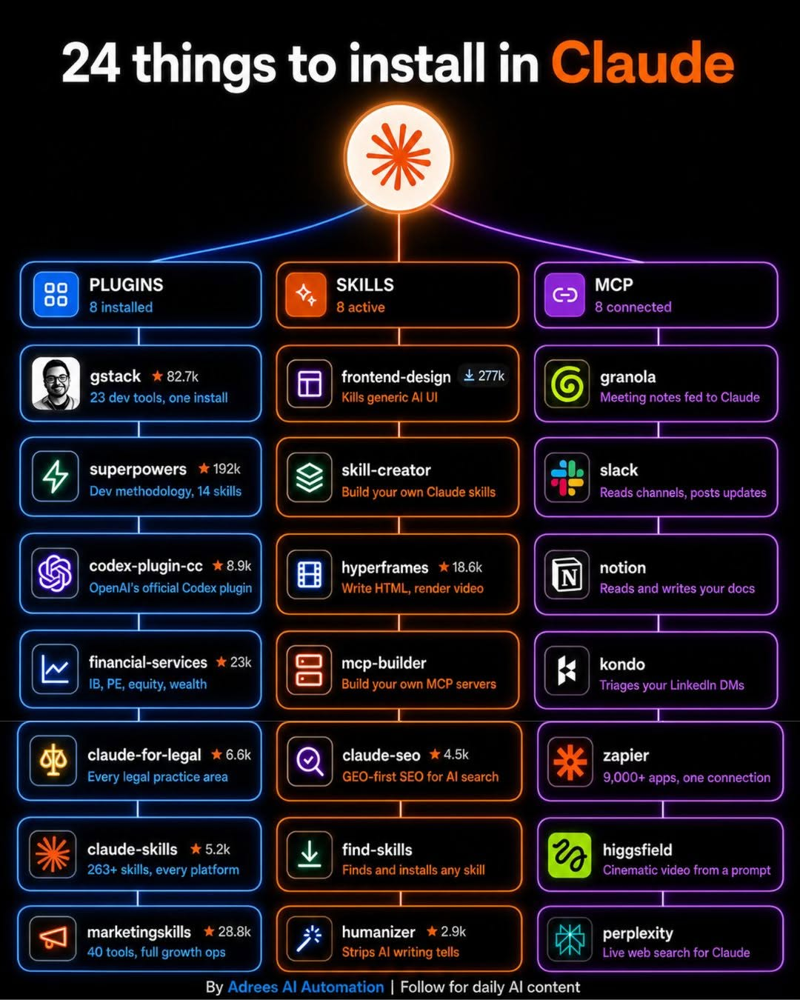

Adrees AI Automation｜Claude Code 外掛、Skills、MCP 24 件安裝清單查核
來源是 Adrees AI Automation 的 Facebook 貼文。貼文文案主張：「You install Claude Code and stop there」，接著列出 24 個值得加到 Claude 的東西，分成 Plugins、Skills、MCP Servers 三類；留言區導向「Comment \"Claude 24\" if you need all these links」，因此原始完整連結包屬於留言門檻內容，公開頁未直接提供所有安裝連結。

一句話摘要
這張圖適合作為「Claude Code 生態地圖」保存：Plugins 對應可安裝的 Claude Code 擴充包，Skills 對應可按任務載入的工作流知識，MCP 對應外部服務連線；但星數、下載量與「base Claude cannot」這類敘事需要保留查核邊界，不能把每個項目都視為官方推薦或已實測能力。
Facebook 公開頁可見內容
- 分享網址：`https://www.facebook.com/share/p/1GJoNYe8yK/`
- 解析後 canonical：`https://www.facebook.com/adreesAI/posts/pfbid02Xq5ap2WnhBcJguqLFMW33puqyUrj13XoWC1WE1AJMPVSAJFZwxhdqVdahdAwNvAl`
- 作者：Adrees AI Automation（已驗證帳號）。
- 公開可見互動：擷取時約 216 個心情、367 則留言、71 次分享。
- 貼文文案：Claude Code 安裝後不要停在基礎功能，還可加入 8 個 Plugins、8 個 Skills、8 個 MCP Servers。
- CTA：留言 `Claude 24` 取得所有連結與 step-by-step guide。
圖卡 OCR：24 個項目
Plugins：8 installed
| 項目 | 圖卡說法 | 查核筆記 |
|---|---|---|
| gstack | 23 dev tools, one install；圖上標示 82.7k | GitHub 可查到 `garrytan/gstack`，描述為 Garry Tan 的 Claude Code setup，含 CEO、Designer、Eng Manager、Release Manager、Doc Engineer、QA 等 opinionated tools。 |
| superpowers | Dev methodology, 14 skills；圖上標示 192k | GitHub 可查到 `obra/superpowers`，定位為 agentic skills framework 與 software development methodology。 |
| codex-plugin-cc | OpenAI's official Codex plugin；圖上標示 8.9k | GitHub 可查到 `openai/codex-plugin-cc`，用途是讓 Claude Code 使用者在既有流程中啟動 Codex 做 code review 或 delegation。 |
| financial-services | IB, PE, equity, wealth；圖上標示 23k | 本次未找到可穩定對應的一手官方 repo；保留為圖卡主張。 |
| claude-for-legal | Every legal practice area；圖上標示 6.6k | 本次未找到足夠一手來源；法律用途需特別注意專業責任與資料隱私，不宜直接視為法律意見工具。 |
| claude-skills | 263+ skills, every platform；圖上標示 5.2k | 可對應到「skills marketplace / skills collection」類生態，但具體專案需重新確認。 |
| marketingskills | 40 tools, full growth ops；圖上標示 28.8k | 本次未找到穩定一手來源；保留為社群清單項。 |
| 其他圖示/項 | 圖上左欄第一項看似 gstack，上方欄名是 Plugins。 | 圖中數字可能是 stars / downloads / views，但未標明統一單位，本文不採信為排行榜。 |
Skills：8 active
| 項目 | 圖卡說法 | 查核筆記 |
|---|---|---|
| frontend-design | Kills generic AI UI；圖上標示 277k | Anthropic `claude-code` repo 內可查到 `plugins/frontend-design`，描述為產生 distinctive, production-grade frontend interfaces，避免 generic AI aesthetics。 |
| skill-creator | Build your own Claude skills | Anthropic `skills` repo 可查到 `skill-creator/SKILL.md`，官方也說明 Skills 可封裝可重複任務。 |
| hyperframes | Write HTML, render video；圖上標示 18.6k | GitHub 可查到 `heygen-com/hyperframes`，描述為「Write HTML. Render video. Built for agents」。 |
| mcp-builder | Build your own MCP servers | 可查到 `mcp-builder` 類 skill 與 FastMCP / MCP SDK 相關資料；更適合視為「建 MCP server 的技能方向」。 |
| claude-seo | GEO-first SEO for AI search；圖上標示 4.5k | Brave 查到多個 `geo-seo` / `claude-seo` repo；方向是 AI 搜尋可引用性、schema、crawler 分析等，但需確認使用哪一個版本。 |
| find-skills | Finds and installs any skill | 可查到 `vercel-labs/skills` 的 `find-skills/SKILL.md` 與社群 find-skill repo；「any skill」是行銷式說法，實務上仍受來源、格式與安全限制。 |
| humanizer | Strips AI writing tells；圖上標示 2.9k | 可查到 `blader/humanizer`，定位為移除 AI-generated writing signs 的 agent skill。 |
| Skills 分類本身 | loaded on demand / 8 active | Anthropic 官方文件支持 Skills 可按任務封裝可重用知識；但圖中這 8 個不全是 Anthropic 官方內建。 |
MCP：8 connected
| 項目 | 圖卡說法 | 查核筆記 |
|---|---|---|
| granola | Meeting notes fed to Claude | Granola 官方 blog / docs 確認 Granola MCP 可把 meeting notes 連到 Claude、ChatGPT、Cursor 等 MCP-compatible tools。 |
| slack | Reads channels, posts updates | Slack 官方文件有 Slack MCP server，支援 Claude Code / Claude Desktop 連接。 |
| notion | Reads and writes your docs | Notion 官方 MCP 文件與 Notion Claude Code plugin repo 可查到；可連接 Notion workspace。 |
| kondo | Triages your LinkedIn DMs | 本次未找到足夠一手來源；保留為圖卡主張。LinkedIn DM 自動化還需注意平台條款與隱私。 |
| zapier | 9,000+ apps, one connection | Zapier 官方 MCP 頁面宣稱可連接 9,000+ apps、30,000+ actions。 |
| higgsfield | Cinematic video from a prompt | Higgsfield 官方 MCP / Claude AI Video Generator 頁可查到相關主張，但實際生成品質、費用與可用模型需另行實測。 |
| perplexity | Live web search for Claude | Perplexity 官方 MCP server 文件確認可把即時 web search 接入 MCP-compatible client。 |
| MCP 分類本身 | live connections / 8 wired | Anthropic Claude Code MCP quickstart 支持 Claude Code 連 MCP server，但每個服務的權限、OAuth、費用與資料邊界需逐一檢查。 |
查核重點
1. Claude Code Plugins 是官方承認的擴充機制
Anthropic Claude Code docs 說明，plugins 可擴充 slash commands、specialized agents、hooks、MCP servers 等能力，且 Anthropic 維護 official / partner plugin marketplaces。這支持圖卡「Plugins 是 heavy lifters」的大方向。
但本文不採信圖中每個星數或下載量，因為圖卡未說明數字來源，也可能混用 GitHub stars、npm downloads、社群追蹤或作者自訂指標。
2. Skills 的價值在「可重複工作流」，不是魔法包
Anthropic 官方 Skills 文件與 `anthropics/skills` repo 都把 Skills 描述為教 Claude 完成特定任務的可重複方式。這與 frontend-design、skill-creator、humanizer、find-skills 這類項目的定位一致。
對欒帥來說，這張圖最有用的是提醒：與其只收藏工具名稱，不如把常用任務做成可維護的 skill stack，例如：社群連結歸檔、AI 工具查核、課程頁生成、簡報設計、文章人味化、MCP server 建置檢查。
3. MCP 是連接外部系統的正確抽象，但風險也更高
Granola、Slack、Notion、Zapier、Perplexity、Higgsfield 都能找到官方 MCP 或 MCP-compatible 整合資訊。這類連線的價值在於讓 Claude 讀取會議紀錄、Slack 訊息、Notion 文件、Zapier app、即時搜尋或影音生成能力。
同時，MCP 也是最需要權限治理的一層：要確認 OAuth scope、讀寫權限、是否會接觸客戶資料、是否會觸發外部 action，以及是否有費用與速率限制。
欒帥可用的判讀方式
若要把這張清單轉成實際工作流，建議分三步：
- 先裝「可信且可回滾」的官方或高信任來源：Anthropic official / partner plugins、OpenAI `codex-plugin-cc`、Notion / Slack / Zapier / Perplexity 官方 MCP。
- 再挑「任務明確」的 Skills：frontend-design、skill-creator、humanizer、find-skills、mcp-builder。每個 skill 都要看 `SKILL.md`、license、安裝方式與最近更新。
- 最後才評估 niche tools：financial-services、claude-for-legal、kondo、marketingskills 這類較高風險或來源不清楚的項目，先不要接入敏感資料。
注意事項
- 本文沒有留言 `Claude 24`，因此未取得作者提供的完整連結包或 step-by-step guide。
- Facebook 圖片已本地化保存，公開頁不熱連 Facebook CDN。
- 本文僅做公開來源查核，沒有實際安裝或授權任何 plugin / skill / MCP server。
- 涉及金融、法律、LinkedIn DM、Slack/Notion 內部資料的工具，落地前必須先做權限、隱私、合規與費用檢查。
Why it matters
Claude Code 的進階用法正在從「單一 coding assistant」變成「Plugins + Skills + MCP」三層架構：Plugins 擴充操作介面，Skills 沉澱工作方法，MCP 連接外部資料與工具。這則貼文值得放進 AI 學習雷達，因為它把下一波 Claude 生態的學習路線濃縮成一張圖；真正該保存的不是 24 個名稱本身，而是如何判斷哪些能安全接入、哪些只是社群 hype。